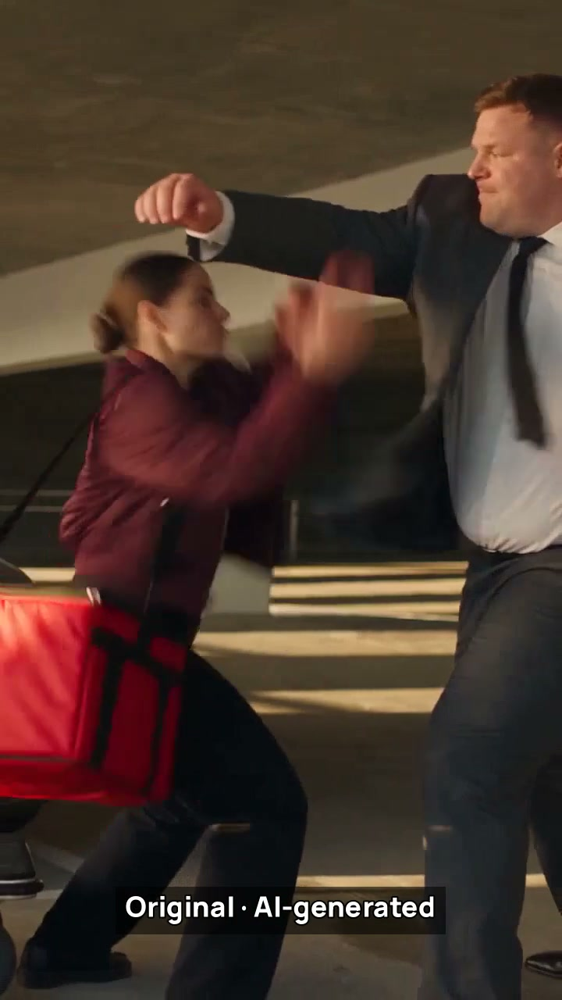
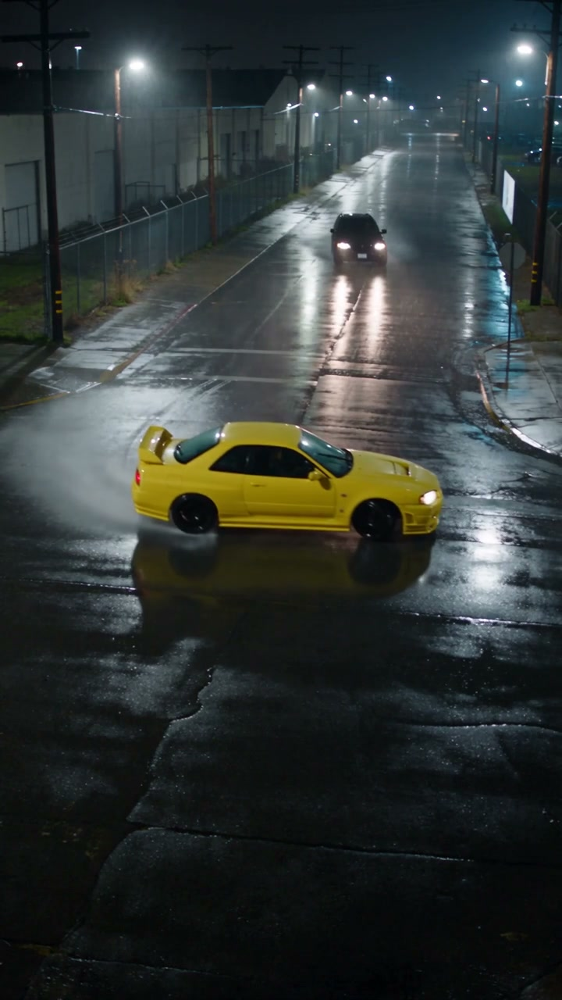

One fight. Two looks.
Seven matched cuts reveal an outfit change, a trolley fall and a cake payoff. Full source, reference and cut recipe included.
Seedance 2.5 / Genjutsu · 13.2 seconds · 720p
Watch the outfit swapShe outran everyone.
Except the red light.
Watch our complete AI films, take the exact prompts and see how the shots were made. Start with a Seedance 2.5 chase, cut in our Studio 2 Video Editor.
Seedance 2.5. 12-second edit. 720 × 1280.
Original generated audio. AI-generated fictional adults.

Seven matched cuts reveal an outfit change, a trolley fall and a cake payoff. Full source, reference and cut recipe included.
One pull turns a chair into a moving buggy. Full output and the exact transformation prompt.

A wet-road car chase with a calm passenger. Watch the whole cut and copy the prompt and editing recipe.
Internal team demonstrations. Review each model’s live settings, availability and full quote before generating.
Watch the complete 720p Seedance 2.5 action original →One full earlier 15-second take and its actual prompt. This film used a different route from the new 720p text/still-image option. See the current 15s/720p offer, pack math and workflow limits.
Watch our complete 1080p Veo 3.1 outputEight seconds, supplier-upscaled 1080p, the exact submitted prompt and an earlier qualified $0.25 pack allocation. Inspect what the prompt got right and what it missed.
Deutsch: Seedance-Beispiele in 720p und Verfügbarkeit →Vollständiger früherer Film mit Original-Prompt. Die neue 720p-Option für Text oder Standbilder ist ein anderer Weg und unterstützt kein Quellvideo/Genjutsu und keine 30 Sekunden. Prüfe das aktuelle Format und den vollständigen Paketpreis vor dem Kauf.
Seedance 2.5: 15s/720p from $0.495 with the $99 pack →Compare the new 720p text/still-image option, full pack commitments and selected published Krea plans. Earlier films and Genjutsu examples are labelled separately.
One idea. Three directions. Try the free scene planner →Choose the light and copy a prompt, or download the worksheet. Review before spending on another take. This is a planning exercise, not tested footage.
Your image. Your signature. Brand two images with one shared layout →Actual Studio 2 Brand Canvas PNG exports, the layout settings and a free-export walkthrough. AI generation is separate.
New: watch the 21-second action showreel →Chase, fight and Genjutsu. Local narration, complete films, actual prompts and free starter inputs.
Count discarded takes, confirmed restored credits and approved seconds. This free usable-footage calculator separates allocated usage from the upfront pack purchase.
Calculations stay in this browser. No account, uploads, analytics or external scripts. Links to SeedanceCheap can include the channel where this worksheet was shared.
No approved footage yet: cost per usable second is undefined, even if the generation itself was delivered.
Minimum pack cash assumes a fresh balance after all confirmed restorations. Pending jobs, the order of attempts and refunds, existing balances, payment fees and taxes can change your actual cash outlay. Use checkout receipts for what you paid.
New to AI video? Follow the free first-scene guide →
Characters or cuts drifting? Plan two connected shots →
Planning an AI car video? Inspect the original prompt and review one shot →
Product lettering changing? Plan the shot and add approved artwork in the edit →
Building with the API? Save one request and recover the same job →
One current 15s/720p request uses 0.5 credit. With $99 upfront for 100 credits, it allocates $0.495 and leaves 99.5 credits. The smaller $2.50 one-credit starter covers two such requests, allocating $1.25 to each.
If you make three 15-second requests and keep only one, all three attempts count: 1.5 credits allocate $1.485 from the $99 pack, leaving 98.5 credits. Using only one-credit $2.50 packs, the same batch requires two packs ($5 upfront), allocates $3.75 and leaves 0.5 credit. Other pack combinations can change the purchase total.
These are hypothetical budgets, not measured success rates. A delivered take you reject is still a paid attempt. Count editing, reference images and other production expenses separately. Check the live quote and capacity before purchasing.
Use the shot-review template to record picture, sound and continuity separately.
A thumbnail cannot show whether a moving shot keeps its subject, action and story beats. Watch the full 720p action scene and read its actual prompt →
Plan a music-video chorus before spending on animation →
Open the prompt cookbook and review templates →
Write a character and scene with the free prompt builder →
Text prompt writing is free. Video generation is separate; check live availability before generating or purchasing.